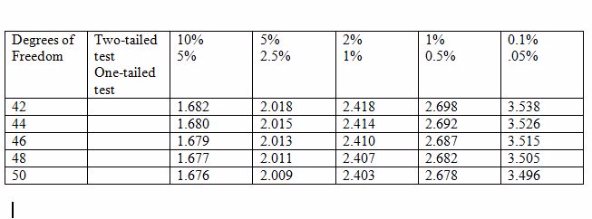
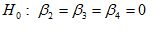
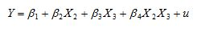
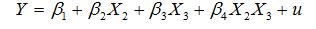
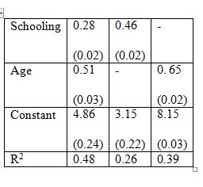
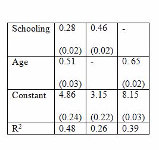
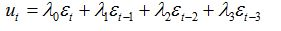

1
While estimating a population mean given a finite sample of observations, we find that there is more than one unbiased estimator for it. In this case,
what would be the criteria for choosing between the estimators?
Choose one answer.
| A. We choose the one with the maximum population variance. | ||
| B. We choose the one with the smallest population variance. | ||
| C. It does not matter as long as both are unbiased. | ||
| D. We choose the one that is consistent. |
Question
2
A pair of random variables is uncorrelated. In other words, which of the following is true of these variables?
Choose one answer.
| A. The random variables will have a zero covariance. | ||
| B. Their variances are zero. | ||
| C. Their variances are the same. | ||
| D. The random variables are statistically independent. |
Question
3
X is a random variable with a normal distribution: X~N(µ,σ2 ). The mean µ is unknown, and we wish to test the null hypothesis that H0: µ = 15
against its alternative hypothesis H1: µ ≠15. If we have a sample of data with sample mean 14 and standard deviation 1, what would the result of
the test be?
Choose one answer.
| A. We would reject H0 at the 5% significance level but not at the 1% level. | ||
| B. We would reject H0 at the 5% significance level and also at the 1% level. | ||
| C. We would not reject H0 or at the 1% level. | ||
| D. We would reject H0 at the 1% significance level but not at the 5% level. |
Question
4
A person committed a legal crime and was taken to trial. However, due to lack of evidence, he was proved "not guilty" and was not charged for the offense.
If we consider the null hypothesis to be "guilty," this scenario represents which of the following?
Choose one answer.
| A. A Type I error was made. | ||
| B. A Type II error was made. | ||
| C. Both Type I and Type II errors were made. | ||
| D. Neither Type I nor Type II error was made. |
Question
5
An innocent person was wrongly arrested and taken to trial. Somehow all evidence showed that he was "guilty," although he did not commit any crime. The
jurors pleaded that the man was guilty and was convicted for crime. If we consider the null hypothesis to be "guilty," this scenario represents which of
the following?
Choose one answer.
| A. A Type I error was made. | ||
| B. A Type II error was made. | ||
| C. Both Type I and Type II errors were made. | ||
| D. Neither Type I nor Type II error was made. |
Question
6
What is the rationale for using the t-statistic?
Choose one answer.
| A. The standard deviation of the sample estimate is unknown. | ||
| B. It is quicker to perform than any other tests. | ||
| C. We have the values of tables to refer to. | ||
| D. The mean of the population is unknown. |
Question
7
A 95% confidence interval of a mean implies which of the following?
Choose one answer.
| A. There is a 95% chance that the true population mean lies within the given interval. | ||
| B. If the procedure for computing a 95% confidence interval is used over and over, 95% of the time the interval will contain the true parameter value. | ||
| C. We are 95% confident that the null hypothesis is true. | ||
| D. We are 95% confident that our sample mean is the true population mean. |
Question
8
Which of the following statements is true with respect to the use of one-sided tests?
I. They can be useful in improving the trade-off between the risks of making Type I and Type II errors.
II. They can be useful when you wish to use a significance larger than 5%.
III. They can be useful when you can predict the sign of the coefficient from theory.
I. They can be useful in improving the trade-off between the risks of making Type I and Type II errors.
II. They can be useful when you wish to use a significance larger than 5%.
III. They can be useful when you can predict the sign of the coefficient from theory.
Choose one answer.
| A. Only I is correct. | ||
| B. Both II and III are correct. | ||
| C. Both I and III are correct. | ||
| D. Only III is correct. |
Question
9
What is the rationale behind testing an estimator's consistency even for finite samples?
Choose one answer.
| A. Sometimes it is impossible to find an estimator that is unbiased for small samples and having a consistent estimator is better than not having an estimator at all. | ||
| B. The expected value rules are weak analytical instruments and as such, oftentimes, we are unable to say anything at all about the expectation of an estimator. | ||
| C. All of the above | ||
| D. None of the above |
Question
10
Which of the following explains the Central Limit Theorem?
Choose one answer.
| A. The distribution of sample means will approximate a normal distribution as the sample size becomes large, even if the underlying population distribution is not normal. | ||
| B. If the underlying population distribution is not normal, the distribution of sample means cannot approximate a normal distribution, even if the sample size becomes large. | ||
| C. The sample means will approximate a normal distribution as the sample size becomes large, only if the underlying population distribution is normal. | ||
| D. Irrespective of the sample size, the distribution of the sample mean will always approximate a normal distribution. |
Question
11
Consider the simple two-variable linear regression model Yi = β1 + β2Xi + ei, with unknown
parameters β1 and β2. e is the unobserved random error term. The corresponding OLS regression equation for the above model is:
, where and  are OLS estimators of β1 and β2.respectively,
and is the OLS residual. Given this information,
what is the Ordinary Least Squares Estimation Criterion?
are OLS estimators of β1 and β2.respectively,
and is the OLS residual. Given this information,
what is the Ordinary Least Squares Estimation Criterion?
Choose one answer.
| A. Minimize the sum of the residuals: | ||
|
B. Minimize the sum of Yi across all observations: |
||
| C. Minimize the sum of squares of residuals: | ||
|
D. Minimize the sum of squares of the non-stochastic component: |
Question
12
Suppose we run a regression of earnings on years of schooling, using STATA and the result that we get is: .
Earnings are measured in dollars per hour. What does the coefficient "3.27" on the years of schooling imply?
Earnings are measured in dollars per hour. What does the coefficient "3.27" on the years of schooling imply?
Choose one answer.
| A. For each extra year of schooling, earnings increase by $3.27. | ||
| B. For each extra year of schooling, hourly earnings increase by $3.27. | ||
| C. For each extra year of schooling, earnings increase by $6.27. | ||
| D. For each extra year of schooling, hourly earnings increase by $6.27. |
Question
13
Suppose we run a regression of earnings (E) on years of schooling (S), using STATA and the result that we get is:  . We then demean schooling (subtract the years of schooling from the
sample mean) and label this variable 'DS.' A regression of earnings on the demeaned schooling yields the result:
. We then demean schooling (subtract the years of schooling from the
sample mean) and label this variable 'DS.' A regression of earnings on the demeaned schooling yields the result:  . Earnings are measured in dollars per hour. What does the intercept
coefficient "13" imply?
. Earnings are measured in dollars per hour. What does the intercept
coefficient "13" imply?
Choose one answer.
| A. A person with zero years of schooling is likely to earn $13 per hour. | ||
| B. A person with zero years of schooling is likely to earn $3 per hour. | ||
| C. It represents the hourly earnings of those with mean level of schooling. | ||
| D. Not enough information is given to interpret the coefficient. |
Question
14
Assume Y represents the number of slices of bread consumed per person, per day. X represents the price of one pound of bread, measured in dollars. Z
represents the income of the consumer. A two variable linear model is computed from the data available, and the result is given as follows: . The R-square for the model is found to be
R2 = 0.5972. What is the interpretation of R-square?
. The R-square for the model is found to be
R2 = 0.5972. What is the interpretation of R-square?
Choose one answer.
| A. About 60 percent of the variation in per person daily bread consumption is explained by the variation in the retail price of bread. | ||
| B. About 40 percent of the variation in per person daily bread consumption is explained by the variation in the consumer's income. | ||
| C. About 60 percent of the bread is consumed by an individual daily. | ||
| D. If the price of one pound of bread goes up by a dollar, 60 percent of the daily consumption of bread per person is affected. |
Question
15
The formula for
What is the relationship between R2 and the least squares principle to determine the parameters in the model?
What is the relationship between R2 and the least squares principle to determine the parameters in the model?
Choose one answer.
| A. The OLS regression coefficients are chosen such that the sum of the squares of the residuals is minimized. Goodness of Fit is maximized when the sum of the squares of the residuals is maximized. | ||
| B. The OLS regression coefficients are chosen such that the sum of the squares of the residuals is minimized. Goodness of Fit is minimized when the sum of the squares of the residuals is minimized. | ||
| C. The OLS regression coefficients are chosen such that the sum of the squares of the residuals is maximized. Goodness of Fit is also maximized when the sum of the squares of the residuals is maximized. | ||
| D. The OLS regression coefficients are chosen such that the sum of the squares of the residuals is minimized. Goodness of Fit is also maximized when the sum of the squares of the residuals is minimized. |
Question
16
Which of the following is NOT an assumption of the Classical Normal Linear Regression model, i.e. a model with non-stochastic regressors?
Choose one answer.
| A. The disturbance term has zero expectation. | ||
| B. The disturbance term is heteroscedastic. | ||
| C. The values of the disturbance term have independent distributions. | ||
| D. The disturbance term has a normal distribution. |
Question
17
Which of the following describes one of the statistical properties of the OLS estimators?
Choose one answer.
| A. They are minimum variance but biased estimators. | ||
| B. They are not necessarily consistent. | ||
| C. They are unbiased but do not necessarily have minimum variance. | ||
| D. They are efficient estimators or minimum-variance unbiased estimators. |
Question
18
A researcher wants to examine if earnings are related to height of individuals in the following way: EARNINGS = β1 + β2 HEIGHT + u.
With data on 48 individuals, he wants to test if β2 = 0 against the alternative β2 ≠ 0. The critical values of t for 5% and 1% levels
are given in the table below. What would the researcher's conclusion be if b2 = 0.30, s.e.(b2) = 0.12?

Choose one answer.
| A. t = 2.5. Reject H0 at the 5% level but not at the 1% level. | ||
| B. t = .18. Do not reject H0 at the 5% level and not at the 1% level. | ||
| C. t = 2.5. Reject H0 at the 1% level but not at the 5% level. | ||
| D. t = 25. Reject H0 at the 5% level and at the 1% level. |
Question
19
A researcher wants to examine if earnings is related to height of individuals in the following way: EARNINGS = β1 + β2 HEIGHT + u.
With data on 48 individuals, he wants to test if β2 = 0 against the alternative β2 ≠ 0. The critical values of t for 5% and 1% levels
are given in the table below. What would the researcher's conclusion be if b2 = 0.55, s.e.(b2) = 0.12?

Choose one answer.
| A. t = 0.43. Do not reject H0 at the 1% level. | ||
| B. t = .066. Do not reject H0 at the 1% level. | ||
| C. t = 4.58. Reject H0 at the 1% level. | ||
| D. t = 2.67. Reject H0 at the 5% level but not at the 1% level. |
Question
20
A researcher wants to examine if earnings is related to height of individuals in the following way: EARNINGS = β1 + β2 HEIGHT + u.
With data on 48 individuals, he wants to test if β2 = 0 against the alternative β2 ≠ 0. The critical values of t for 5% and 1% levels
are given in the table below. What would the researcher's conclusion be if b2 = 0.10, s.e.(b2) = 0.12?

Choose one answer.
| A. t = 0.83. Do not reject H₀ at the 5% level. | ||
| B. t = .83. Reject H₀ at the 5% level. | ||
| C. t = 0.83. Reject H₀ at the 1% level. | ||
| D. t = 1.20. Reject H₀ at the 5% level but not at the 1% level. |
Question
21
Which of the following is used to test hypotheses concerning goodness of fit?
Choose one answer.
| A. The t-test | ||
| B. The F-statistic | ||
| C. R-square | ||
| D. R²/ (1- R²) |
Question
22
Consider the multiple regression equation: where for a given time period t, I = actual rate of inflation, U = unemployment rate, and E =
expected inflation rate. All variables are measured in percentage terms. Which of the following best describes an interpretation of the regression
coefficients?
Choose one answer.
| A. The actual inflation rate on the average decreased by 1.46 percent for every percentage point increase in the unemployment rate in the given time period t. | ||
| B. The actual inflation rate on the average increased by 1.46 percent for every percentage point increase in the unemployment rate in the given time period t. | ||
| C. Holding the expected inflation rate constant, the actual inflation rate on the average decreased by 1.46 percent for every percentage point increase in the unemployment rate in the given time period t. | ||
| D. Holding the expected inflation rate constant, the actual inflation rate on the average decreased by 1.59 percent for every percentage point increase in the unemployment rate in the given time period t. |
Question
23
Consider the multiple regression equation: where
for a given time period t, I = actual rate of inflation, U = unemployment rate, and E = expected inflation rate. All variables are measured in percentage
terms. Which of the following best describes an interpretation of R2?
Choose one answer.
| A. The R² value of 0.86 implies that about 86 percent of the variation in the actual inflation rate is explained by the two explanatory variables together. | ||
| B. The R² value of 0.86 implies that about 86 percent of the variation in the two explanatory variables is explained by the actual inflation rate. | ||
| C. The R² value of 0.86 implies that the degree of correlation between the two explanatory variables is 86 percent. | ||
| D. There is not enough information to interpret R². |
Question
24
Suppose a regression model suffers from multicollinearity. Which of the following is a consequence of multicollinearity?
Choose one answer.
| A. The coefficients are biased. | ||
| B. The variances of coefficients are very large. | ||
| C. The t-statistics are very high. | ||
| D. The coefficients are not consistent. |
Question
25
Which of the following is NOT a possible measure for alleviating the multicollinearity problem?
Choose one answer.
| A. Decreasing the number of observations | ||
| B. Combining the correlated variables | ||
| C. Dropping one of the collinear variables | ||
| D. Combining cross-sectional and time-series data |
Question
26
Consider the multiple regression model: EARNINGS = β1 + β2 HEIGHT + β3EDUCATION + β4EXPERIENCE + u. What test
would you perform if you wished to test the following null hypothesis?

Choose one answer.
| A. A two-sided t-test | ||
| B. An F-test | ||
| C. A one sided t-test | ||
| D. Not enough information is provided to make the conclusion. |
Question
27
Which of the following is likely to occur as a result of multicollinearity?
Choose one answer.
| A. The coefficients are biased. | ||
| B. The t-statistics are very high. | ||
| C. The t-ratio of one or more coefficients is statistically insignificant, although the F-test for their joint explanatory power is highly significant. | ||
| D. The variances of coefficients are very small. |
Question
28
How would you interpret the coefficient β2 in a double log regression model given by: Ln Yi = ln β1+ β2 ln
Xi + ui?
Choose one answer.
| A. It measures the elasticity of y with respect to x. | ||
| B. It measures the rate of growth of y with respect to x. | ||
| C. It measures the change in y caused by a one-unit change in x. | ||
| D. It measures the relative change in y caused by an absolute change in x. |
Question
29
Suppose we have data for the time period 2000-2010 for real GDP in the US. We calculate a semi-logarithm model given by: ln GDP(t) = 9.5206+ 0.0351t, where
GDP = real GDP and t = time per year. How would you interpret the coefficient of t in this model?
Choose one answer.
| A. Over the given time period, real GDP in the US was constant at a rate of 3.5% per year. | ||
| B. It measures the relative change in the real GDP in the US, due to a relative change in the time period. | ||
| C. Over the given time period, real GDP in the US grew at a rate of 35% per year. | ||
| D. Over the given time period, real GDP in the US grew at a rate of 3.5% per year. |
Question
30
Consider the non-linear model given by the following equation.
How would you write the transformed linearized model?
How would you write the transformed linearized model?
Choose one answer.
| A. log Y = log β₁ + β₂ log X + u | ||
| B. log Y = log β₁ + β₂ log X + log u | ||
| C. log Y = log β₁ + β₂ log X + e log u | ||
| D. log Y = β₁β₂ log X + log u |
Question
31
Consider the non-linear model given by the following equation.
What properties must the disturbance term satisfy in order to be able to perform t-tests and F- tests?
What properties must the disturbance term satisfy in order to be able to perform t-tests and F- tests?
Choose one answer.
| A. The disturbance term should necessarily be equal to zero. | ||
| B. The disturbance term should necessarily be positive. | ||
| C. The disturbance term should necessarily be negative. | ||
| D. The disturbance term should satisfy the conditions of the simple regression model (i.e. they are identical and independently distributed, have zero expectation, and are homoscedastic) and be normally distributed. |
Question
32
Consider the model given by the following equation.
What is the interpretation of the slope coefficient β2?

What is the interpretation of the slope coefficient β2?
Choose one answer.
| A. It is the effect of X₂ on Y, holding X₃ and X₂X₃ constant. | ||
| B. It would be wrong to interpret it as the marginal effect of X₂ on Y, because it is not possible to keep both X₃ and X₂X₃ constant, when X₂ changes. | ||
| C. It is the marginal effect of X₂ on Y. | ||
| D. It is the effect of X₂ on Y, holding X₃ constant. |
Question
33
Consider the model given by the following equation.
What is the best way to mitigate the problem of interactive terms?

What is the best way to mitigate the problem of interactive terms?
Choose one answer.
| A. Assume that one of the two is constant and then run the regression. | ||
| B. Omit the interactive term, because excluding it will not change the results much. | ||
| C. Rescale X₂ and X₃ so that they are measured from their sample means. | ||
| D. Run a regression of X₂ on X₃ (or vice versa) and include the results in the above regression. |
Question
34
Consider the model given by: Y=β1 +β2(1/X). What is the elasticity coefficient for this model?
Choose one answer.
| A. β₂(1/XY) | ||
| B. - β₂(1/XY) | ||
| C. -β₂(1/Y) | ||
| D. -β₂(1/X) |
Question
35
Consider the model: Yi = α1 + α2Gi +βXi + ui, where Yi = annual salary of a
sales manager, Xi = years of experience, and Gi = 1 for males and 0 otherwise. What do the coefficient α1 + α2
indicate?
Choose one answer.
| A. It indicates the annual salary of a female sales manager for a given level of experience. | ||
| B. It indicates the rate of change in the annual salary of a female sales manager for a given level of experience. | ||
| C. It indicates the annual salary of a male sales manager for a given level of experience. | ||
| D. It indicates the rate of change in the annual salary of a male sales manager for a given level of experience. |
Question
36
Consider the model showing the quarterly profits-sales behavior in a company (profits and sales figures are in thousands of dollars).

Q2, Q3, and Q4 indicate the second, third, and fourth quarters.
Thus, Q2 = 1 for second quarter and is 0 otherwise.
Q3 =1 for third quarter and is 0 otherwise.
Q4 = 1 for fourth quarter and is 0 otherwise.
All coefficients are statistically significant at the 5% level. What was the average level of profits in the third quarter?
Q2, Q3, and Q4 indicate the second, third, and fourth quarters.
Thus, Q2 = 1 for second quarter and is 0 otherwise.
Q3 =1 for third quarter and is 0 otherwise.
Q4 = 1 for fourth quarter and is 0 otherwise.
All coefficients are statistically significant at the 5% level. What was the average level of profits in the third quarter?
Choose one answer.
| A. $71 thousand | ||
| B. $78 thousand | ||
| C. $71.08 thousand | ||
| D. $ 84 thousand |
Question
37
Consider the model showing the quarterly profits-sales behavior in a company (profits and sales figures are in thousands of dollars).
Q2, Q3, and Q4 indicate the second, third, and fourth quarters.
Thus, Q2 = 1 for second quarter and is 0 otherwise.
Q3 = 1 for third quarter and is 0 otherwise.
Q4 = 1 for fourth quarter and is 0 otherwise.
All coefficients are statistically significant at the 5% level. How would you interpret the sales coefficient?
Q2, Q3, and Q4 indicate the second, third, and fourth quarters.
Thus, Q2 = 1 for second quarter and is 0 otherwise.
Q3 = 1 for third quarter and is 0 otherwise.
Q4 = 1 for fourth quarter and is 0 otherwise.
All coefficients are statistically significant at the 5% level. How would you interpret the sales coefficient?
Choose one answer.
| A. The sales coefficient tells us that for every dollar increase in sales, the profits would increase by $56. | ||
| B. The sales coefficient tells us that after taking into account the seasonal effect, a one dollar increase in sales would increase the profits by 8 cents. | ||
| C. The sales coefficient tells us that for every dollar increase in sales, the profits would increase by $56.08. | ||
| D. The sales coefficient tells us that in the first quarter, the profits were $56.08. |
Question
38
Which of the following methods is necessary in order to avoid the dummy variable trap?
Choose one answer.
| A. If the qualitative variable has n categories, ensure that there are n dummy variables. | ||
| B. Ensure that the dummy variables are perfectly collinear. | ||
| C. If the qualitative variable has n categories, ensure that there are n - 1 dummy variables. | ||
| D. If the qualitative variable has n categories, ensure that there are n + 1 dummy variables. |
Question
39
Consider the regression model: Wi = β1 + β2Di + α1Xi +
α2(DiXi) + ui, where Wi = wages of individual I, Xi = level of experience (measured in
years), and Di = 1, if the individual is a college graduate and 0 otherwise. How would you interpret the coefficient α2?
Choose one answer.
| A. α₂ is the differential intercept indicating the difference in the wages between college graduates and non-college graduates. | ||
| B. α₂ is the coefficient indicating the increase in wages of a college graduate if experience increases by one more year. | ||
| C. α₂ is the coefficient indicating the increase in wages of a non-college graduate if experience increases by one more year. | ||
| D. α₂ is the differential slope coefficient indicating by how much the slope coefficient of a college graduate's wage function differs from the slope coefficient of a non-college graduate's wage function. |
Question
40
What is the advantage of the dummy variable technique and running a single regression over the Chow test (i.e. estimating multiple dummy regressions and
the "pooled" regression individually)?
Choose one answer.
| A. When comparing two regressions, the Chow test does not explicitly specify which coefficient (slope, intercept, or both) is different between the regressions, whereas the dummy variable can easily identify this difference. | ||
| B. The Chow test increases the degrees of freedom, where as the dummy variable approach reduces it. | ||
| C. The dummy variable approach and the Chow test are equivalent, and there is no distinct advantage of one over the other. | ||
| D. The Chow test is time consuming, whereas the dummy variable technique is quick. |
Question
41
Suppose the true specification of a model is Y = β1 + β2X2 + β3X3 + u, but the model is
misspecified and a simple regression model is estimated instead. What is the consequence of omitting one of the explanatory variables?
Choose one answer.
| A. The coefficients are biased (in general), but the standard errors are valid. | ||
| B. The coefficients are unbiased (in general), but the standard errors are invalid. | ||
| C. The coefficients are biased (in general), and the standard errors are invalid. | ||
| D. The coefficients are unbiased (in general), and the standard errors are valid. |
Question
42
Suppose the true specification of a model is Y = β1 + β2X2 + u, but the model is misspecified and a multiple regression
model is estimated instead. What is the consequence of including an irrelevant explanatory variables?
Choose one answer.
| A. The coefficients are unbiased (in general), but inefficient and the standard errors are valid (in general). | ||
| B. The coefficients are biased (in general), and inefficient and the standard errors are valid (in general). | ||
| C. The coefficients are biased (in general), and inefficient but the standard errors are invalid (in general). | ||
| D. The coefficients are unbiased (in general), and efficient and the standard errors are valid (in general). |
Question
43
Consider the formula for an F test given by  ,
where RSSR and RSSUR stand for Residual Sum of Squares for the restricted and the unrestricted model respectively,
,
where RSSR and RSSUR stand for Residual Sum of Squares for the restricted and the unrestricted model respectively,
m = number of linear restrictions or the number of regressors omitted from the model, and (n-k) is the degrees of freedom in the unconstrained model. For the model given by: Yi = β1 + β2 X2i + β3 X3i +………+ βk Xki + ui, which of the following nulls can be tested using the above F-test?
m = number of linear restrictions or the number of regressors omitted from the model, and (n-k) is the degrees of freedom in the unconstrained model. For the model given by: Yi = β1 + β2 X2i + β3 X3i +………+ βk Xki + ui, which of the following nulls can be tested using the above F-test?
Choose one answer.
| A. H₀ : RSS = 0 | ||
| B. H₀ : β₂ = β₃ | ||
| C. H₀ : β₂ = β₄=β₅ = 0 | ||
| D. H₀ : β₂ + β₃ =2 |
Question
44
A variable Y depends upon some explanatory variables X2…..Xk in the following manner: Y = β1 + β2 X2
+ β3X3 +…+ βk Xk + u.
If for some reason, there is no data available on a certain variable, say X3, and a proxy variable Z that is linearly related to X3 is used instead, then X3 = µ + αZ.
The regression model is now rewritten as:
Y = β1 + β2 X2 + β3(µ+αZ)β4 X4 +…+ βk Xk + u
= (β1 + β3µ) + β2 X2 + β3αZ + β4X4+…+ βk Xk + u
What are the consequences of including a proxy variable as shown above?
If for some reason, there is no data available on a certain variable, say X3, and a proxy variable Z that is linearly related to X3 is used instead, then X3 = µ + αZ.
The regression model is now rewritten as:
Y = β1 + β2 X2 + β3(µ+αZ)β4 X4 +…+ βk Xk + u
= (β1 + β3µ) + β2 X2 + β3αZ + β4X4+…+ βk Xk + u
What are the consequences of including a proxy variable as shown above?
Choose one answer.
| A. The estimates of all coefficients in the model will be different if a proxy variable is included. | ||
| B. The standard errors and t-statistics of all coefficients will be different if a proxy variable is included. | ||
| C. The result of including a proxy variable is no different than estimating the model if data were available on X₃ except that with the proxy variable, it will not be possible to estimate the individual coefficients β₁ and β₃. | ||
| D. R2 of the model with a proxy variable changes compared to the true model. |
Question
45
Suppose a variable Y depends upon some explanatory variables X2…..Xk in the following manner: Y =
β1 + β2 X2 + β3
X3 +…+ βk Xk +
u
If for some reason, there is no data available on a certain variable, say X3, and a proxy variable Z that is linearly related to X3 is used instead, then X3 = µ + αZ. The regression model is now rewritten as:
Y = β1 + β2 X2 + β3(µ+αZ)β4 X4 +…+ βk Xk + u
= (β1 + β3µ) + β2 X2 + β3αZ + β4 X4+…+ βk Xk + u
Which of the following statements about the model above is false?
If for some reason, there is no data available on a certain variable, say X3, and a proxy variable Z that is linearly related to X3 is used instead, then X3 = µ + αZ. The regression model is now rewritten as:
Y = β1 + β2 X2 + β3(µ+αZ)β4 X4 +…+ βk Xk + u
= (β1 + β3µ) + β2 X2 + β3αZ + β4 X4+…+ βk Xk + u
Which of the following statements about the model above is false?
Choose one answer.
| A. The t statistic for Z will be the same as that which would have been obtained for X₃, if it had been possible to regress Y on X₂, ..., Xk, so you are able to assess the significance of X₃, even if you are not able to estimate its coefficient. | ||
| B. R2 will be the same as it would have been if it had been possible to regress Y on X₂, ..., Xk. | ||
| C. The standard errors and t statistics of the coefficients of X₂,X₄ ..., Xk will be the same as those that would have been obtained if it had been possible to regress Y on X₂, ..., Xk. | ||
| D. The estimates of all the coefficients of the explanatory variables will be different from those that would have been obtained if it had been possible to regress Y on X₂, ..., Xk. |
Question
46
Consider the formula for an F test given by ,
where RSSR and RSSUR stand for Residual Sum of Squares for the restricted and the unrestricted model respectively, m = number of
linear restrictions or the number of regressors omitted from the model, and (n-k) is the degrees of freedom in the unconstrained model. For the model given
by: Yi = β1 + β2 X2i + β3 X3i +………+ βk Xki + ui, which
of the following nulls can be tested using the above F-test?
Choose one answer.
| A. H0 : RSS = 0 | ||
| B. H0 : β2 = β3 | ||
| C. H0 : β2 = β4 = β5 = 0 | ||
| D. H0 : β2 = β3 = 2 |
Question
47
Consider the model given by ln Y = β1 + β2 ln X2 - β3 ln X3 + β4 ln X4 + u,
where Y= per capita consumption of tea, X2 = real disposable per capita income (measured in dollars), X3 = price of sugar (measured
in dollars per pound), X4 = price of coffee (measured in dollars per pound). If we want to test the hypothesis that coffee and tea are unrelated
products, what is the null going to be?
Choose one answer.
| A. H0 : β3 = β4 | ||
| B. H0 : β3 + β4 = 0 | ||
| C. H0 : β4 = 0 | ||
| D. H0 : β1 = β4 |
Question
48
Consider the model given by ln Y = β1 + β2 ln X2 + β3 ln X3 + β4 ln X4 + u,
where Y = per capita consumption of tea, X2 = real disposable per capita income (measured in dollars), X3 = price of sugar (measured
in dollars per pound), X4 = price of coffee (measured in dollars per pound). Suppose that according to economic theory, coffee and tea are
competing products. What would be the sign of the coefficient β4?
Choose one answer.
| A. β₄ > 0 | ||
| B. β₄ < 0 | ||
| C. β₄ = 0 | ||
| D. This cannot be determined with the amount of information given. |
Question
49
Consider the model given by ln Y = β1 + β2 ln X2 + β3 ln X3 + β4 ln X4 + u,
where Y = per capita consumption of tea, X2 = real disposable per capita income (measured in dollars), X3 = price of sugar (measured
in dollars per pound), X4 = price of coffee (measured in dollars per pound). Suppose that according to economic theory, sugar and tea are
complementary products. What would be the sign of the coefficient β3?
Choose one answer.
| A. β₃ > 0 | ||
| B. β₃ < 0 | ||
| C. β₃ = 0 | ||
| D. This cannot be determined with the amount of information given. |
Question
50
Consider the model: Earnings = β1 + β2 Schooling + β3 Age + u.
The standard errors appear in parentheses. Cov(Age, Schooling) = 0.47. The first column of the table gives the result of a multiple regression on Schooling and Age. The estimated coefficients for the multiple regression model are both significantly different from zero at a very high significance level. The second and third columns are regressions with one variable only. What could be one reason that the coefficient on schooling in the second column is greater than that in the first column?

The standard errors appear in parentheses. Cov(Age, Schooling) = 0.47. The first column of the table gives the result of a multiple regression on Schooling and Age. The estimated coefficients for the multiple regression model are both significantly different from zero at a very high significance level. The second and third columns are regressions with one variable only. What could be one reason that the coefficient on schooling in the second column is greater than that in the first column?
Choose one answer.
| A. The variable "Age" is not an important factor in the model for earnings. | ||
| B. The coefficient is subject to omitted variable bias. | ||
| C. Schooling is an important factor, and it is important to see its effect in exclusion. | ||
| D. The coefficient is subject to multicollinearity. |
Question
51
Consider the model: Earnings = β1 + β2 Schooling + β3 Age + u.
The standard errors appear in parentheses. Cov(Age, Schooling) = 0.47. The first column of the table gives the result of a multiple regression on Schooling and Age. The estimated coefficients for the multiple regression model are both significantly different from zero at a very high significance level. The second and third columns are regressions with one variable only. What is the sign of the bias in the third column when schooling is omitted as an explanatory variable?

The standard errors appear in parentheses. Cov(Age, Schooling) = 0.47. The first column of the table gives the result of a multiple regression on Schooling and Age. The estimated coefficients for the multiple regression model are both significantly different from zero at a very high significance level. The second and third columns are regressions with one variable only. What is the sign of the bias in the third column when schooling is omitted as an explanatory variable?
Choose one answer.
| A. The bias is positive. | ||
| B. The bias is negative. | ||
| C. The bias cannot be determined with the information provided. | ||
| D. There is no bias in the third model. |
Question
52
Consider the model: Earnings = β1 + β2 Schooling + β3 Age + u.
The standard errors appear in parentheses. Cov(Age, Schooling) = 0.47. The first column of the table gives the result of a multiple regression on Schooling and Age. The estimated coefficients for the multiple regression model are both significantly different from zero at a very high significance level. The second and third columns are regressions with one variable only. What does the value of R2 in the second and third columns indicate?
The standard errors appear in parentheses. Cov(Age, Schooling) = 0.47. The first column of the table gives the result of a multiple regression on Schooling and Age. The estimated coefficients for the multiple regression model are both significantly different from zero at a very high significance level. The second and third columns are regressions with one variable only. What does the value of R2 in the second and third columns indicate?

Choose one answer.
| A. It shows the covariance between all the explanatory variables in the model. | ||
| B. It indicates the potential explanatory power of the missing variables in the model. | ||
| C. It indicates the probability of Type I or Type II errors that could occur in the model. | ||
| D. It exaggerates the explanatory power of the model, because it acts as a proxy for the missing variable. |
Question
53
What does the term heteroscedasticity refer to?
Choose one answer.
| A. It means that the variance of the distribution of the disturbance term is the same for each observation. | ||
| B. It implies that the distribution of the disturbance term associated with each observation should have a mean equal to zero. | ||
| C. It implies that the distribution of the disturbance term associated with each observation should have a normal distribution. | ||
| D. It means that the disturbance terms are not independently distributed. |
Question
54
Which of the following are possible consequences of heteroscedasticity?
I. The standard errors of the regression coefficients are not estimated correctly.
II. The OLS estimates are inefficient.
III. The t-test and F-tests are still valid.
I. The standard errors of the regression coefficients are not estimated correctly.
II. The OLS estimates are inefficient.
III. The t-test and F-tests are still valid.
Choose one answer.
| A. Both I and III are true. | ||
| B. Both II and III are true. | ||
| C. Both I and II are true. | ||
| D. All three consequences listed are possible. |
Question
55
Suppose we have savings and income data for a cross section of 32 families. It is postulated that savings is linearly related to income, so the
econometrician formulates the following model: Yi = β1 + β2Xi + ui. However, the econometrician
suspects something not quite right in the data and conducts a test in the following way. He drops the middle 4 observations and performs OLS regressions on
the first 13 and the last 13 observations. He observes the residual sum of squares and constructs a statistic as such:  . What test is the econometrician conducting, and what is he testing
for?
. What test is the econometrician conducting, and what is he testing
for?
Choose one answer.
| A. An F-test for linear restriction | ||
| B. A Chow test for irrelevant variable | ||
| C. A Durbin-Hu-Watson test for measurement error | ||
| D. A Goldfeld-Quandt test for heteroscedasticity |
Question
56
Consider the following model: Yi = β1 + β2 X2i + ui. Given the data, an econometrician performs a
test in the following manner:
1. He estimates the regression and obtains the residuals on the original explanatory variables, their squared values, and their cross products, and obtains the R2 from this regression.
3. He then conducts a statistic, n R2, and compares it to the critical chi-square value at the chosen level of significance.
What test is the econometrician conducting, and what is he testing for?
1. He estimates the regression and obtains the residuals on the original explanatory variables, their squared values, and their cross products, and obtains the R2 from this regression.
3. He then conducts a statistic, n R2, and compares it to the critical chi-square value at the chosen level of significance.
What test is the econometrician conducting, and what is he testing for?
Choose one answer.
| A. An F-test for linear restriction | ||
| B. A White test for heteroscedasticity | ||
| C. A Durbin-Hu-Watson test for measurement error | ||
| D. A Goldfeld-Quandt test for heteroscedasticity |
Question
57
Consider the model:  , where var(ui) =
, where var(ui) =
 (i.e. there is heteroscedasticity in the model).
Assume that the error variance is proportional to Xi, i.e.,
(i.e. there is heteroscedasticity in the model).
Assume that the error variance is proportional to Xi, i.e.,  . What would be the appropriate transformation of the model in this case in order to ensure that the error variance becomes homoscedastic?
. What would be the appropriate transformation of the model in this case in order to ensure that the error variance becomes homoscedastic?
Choose one answer.
|
A. |
||
| B. | ||
|
C. |
||
| D. |
Question
58
In a situation where heteroscedasticity is suspected, but there is not enough information to identify its nature, how can one overcome the problem of
biased standard errors?
Choose one answer.
| A. Use weighted least squares, i.e. transform the model by using appropriate weights for the regression model so that the error variance becomes homoscedastic. | ||
| B. Use White's heteroscedasticity-consistent variances and standard error at least in large samples, in which the t-tests and F-tests are asymptotically valid. | ||
| C. Run a standard OLS regression, ignoring heteroscedasticity, because in large samples, this problem is not of any consequence and the t-tests and F-tests are asymptotically valid. | ||
| D. Refine the data to get homoscedastic variances, otherwise the results are contaminated and misleading. |
Question
59
You are given the following data:
RSS1 based on first 15 observations = 75, df = 10;
RSS2 based on last 15 observations = 278, df = 10.
The critical F value for 10 numerator and 10 denominator df at the 5% level is 2.98. What would you conclude about heteroscedasticity in this case?
RSS1 based on first 15 observations = 75, df = 10;
RSS2 based on last 15 observations = 278, df = 10.
The critical F value for 10 numerator and 10 denominator df at the 5% level is 2.98. What would you conclude about heteroscedasticity in this case?
Choose one answer.
| A. Nothing can be said unless more information is provided. | ||
| B. The White test confirms the presence of heteroscedasticity in this case. | ||
| C. Both the White test and the Goldfeld-Quandt test confirm that there is no heteroscedasticity in this case. | ||
| D. The Goldfeld-Quandt test confirms the presence of heteroscedasticity in this case. |
Question
60
You are given the following data:
RSS1 based on first 15 observations = 75, df = 10;
RSS2 based on last 15 observations = 278, df = 10.
The critical F value for 10 numerator and 10 denominator df at the 5% level is 2.98. What test would you perform to test for the presence of heteroscedasticity?
RSS1 based on first 15 observations = 75, df = 10;
RSS2 based on last 15 observations = 278, df = 10.
The critical F value for 10 numerator and 10 denominator df at the 5% level is 2.98. What test would you perform to test for the presence of heteroscedasticity?
Choose one answer.
| A. The White test | ||
| B. No test can be performed unless more information is provided. | ||
| C. The Goldfeld-Quandt test | ||
| D. A Monte-Carlo simulation |
Question
61
An econometrician ran the following regression of average annual spending in a household (S) (measured in thousands of dollars) on the number of people in
the family (N) for a random sample of 50 families:
.
Suspecting heteroscedasticity in the data, he then runs another regression as such:
.
How would you compare the slopes and intercepts of the two models?
.
Suspecting heteroscedasticity in the data, he then runs another regression as such:
.
How would you compare the slopes and intercepts of the two models?
Choose one answer.
| A. Both models have one constant and one explanatory variable. | ||
| B. The first model has one explanatory variable, and the second has two explanatory variables. | ||
| C. The first model has two explanatory variables, and the second has one explanatory variable. | ||
| D. The slope and the explanatory variables of the two models are not affected by the transformation. |
Question
62
An econometrician ran the following regression of average annual spending in a household (S) (measured in thousands of dollars) on the number of people in
the family (N) for a random sample of 50 families:
.
Suspecting heteroscedasticity in the data, he then runs another regression as such:
.
Which of the following is true about the first model?
.
Suspecting heteroscedasticity in the data, he then runs another regression as such:
.
Which of the following is true about the first model?
Choose one answer.
| A. The OLS estimators are biased in the first model due to heteroscedasticity. | ||
| B. The OLS estimators are efficient in the first model despite heteroscedasticity. | ||
| C. The OLS estimators are efficient and unbiased due to heteroscedasticity. | ||
| D. The OLS estimators are unbiased but not efficient due to heteroscedasticity. |
Question
63
Which of the following is a possible consequence of the regressors being stochastic, (i.e., the observations of the regressors in the sample are not fixed
and given, rather, they are drawn randomly from fixed populations with finite means and finite population variances)?
Choose one answer.
| A. The disturbance term may not be independent of the regressors so that it is possible for the regressors and the disturbance term to have a distributional relationship between them. | ||
| B. The disturbance term may not have a zero expectation. | ||
| C. The specification of the model when the regressors are randomly selected from fixed populations necessarily are non-linear. | ||
| D. The regressors are all correlated such that the possibility of multicollinearity is very high. |
Question
64
Consider a model where all of the assumptions of the simple regression model hold (i.e. the model is linear in parameters and correctly specified, the
disturbance term have independent normal distributions with zero mean and constant variance), but the regressors are stochastic and the values of the
disturbance term have independent distributions, and the OLS regression estimator for the slope coefficient (β2) is given by the following
equation.
Would this estimator be a biased or an unbiased estimator?
Would this estimator be a biased or an unbiased estimator?

Choose one answer.
| A. It is a biased estimator. | ||
| B. It is an unbiased estimator. | ||
| C. Biasedness cannot be determined in this case, because the weight ai depends upon the values of the regressors. | ||
| D. There is not enough information given to calculate the biasedness. |
Question
65
Consider a model where all of the assumptions of the simple regression model hold (i.e. the model is linear in parameters and correctly specified, the
disturbance term have independent normal distributions with zero mean and constant variance), but the regressors are stochastic and the values of the
disturbance term have independent distributions, and the OLS regression estimator for the slope coefficient (β2) is given by the following
equation.
Which of the following properties of the estimator is false?
Which of the following properties of the estimator is false?

Choose one answer.
| A. Provided that the regression model assumptions are valid, the estimator is consistent. | ||
| B. Provided that the regression model assumptions are valid, the OLS estimators are BLUE (best linear unbiased estimators), as assured by the Gauss-Markov theorem. | ||
| C. Provided that the regression model assumptions are valid, the estimator has a zero mean. | ||
| D. If the disturbance term has a normal distribution, the regression coefficients also have normal distributions. |
Question
66
Consider a simple regression model given by Y = β1 + β2Z + v, where the explanatory variable
(Z) is subject to measurement error(w). The model is measured by the explanatory variable X instead: X = Z + w. Which of the following are possible consequences of the above
model?
Choose one answer.
| A. The estimator for the slope coefficient is biased and inconsistent. | ||
| B. The standard errors, t-tests, and F-tests are invalid. | ||
| C. All of the above | ||
| D. None of the above |
Question
67
Consider a simple regression model Z = β1 +
β2X + v in which the true dependent variable(Z) is subject to
measurement error(w) and is measured by Y = Z + w. Which of the following is a possible consequence of such a model?
I. The standard errors, t-tests, and F-tests are invalid.
II. The standard errors, t-tests, and F-tests are valid.
III. The standard errors will tend to be larger than they would have been if there had been no measurement error, reflecting the fact that the variances of the coefficients are larger.
I. The standard errors, t-tests, and F-tests are invalid.
II. The standard errors, t-tests, and F-tests are valid.
III. The standard errors will tend to be larger than they would have been if there had been no measurement error, reflecting the fact that the variances of the coefficients are larger.
Choose one answer.
| A. Only I is correct. | ||
| B. Both II and III are correct. | ||
| C. Only II is correct. | ||
| D. Only III is correct. |
Question
68
Suppose an economist is trying to determine the following model: Ln wage = β0 + β1education + u. According to the economist, the
error term includes "ability," an unobserved explanatory variable, which is correlated with education. He then seeks to find another variable for this
model such that this new variable is uncorrelated with ability but correlated with education. What type of variable is the economist employing in
estimating this model?
Choose one answer.
| A. A proxy variable | ||
| B. A binary dependent variable | ||
| C. An instrument variable | ||
| D. A dummy variable |
Question
69
Which of the following is true of the instrumental variables (IV) estimator?
Choose one answer.
| A. The IV estimator is biased and inconsistent. | ||
| B. The IV estimator is unbiased and consistent. | ||
| C. The IV estimator is unbiased but inconsistent. | ||
| D. The IV estimator is biased but consistent. |
Question
70
When estimating a regression model using Instrumental Variables, what is the method that should be applied to estimate the coefficients?
Choose one answer.
| A. Two-stage least squares | ||
| B. Ordinary least squares | ||
| C. Maximum likelihood estimation | ||
| D. Restricted least squares |
Question
71
Consider the model: Y = β0 + β1X + β2Z1 + β3Z2 + u, where X is a suspected endogenous
variable and both the Zs are exogenous variables. What is the test that should be performed to find out whether X is correlated with u?
Choose one answer.
| A. Durbin Watson test | ||
| B. Goldfeld-Quandt test | ||
| C. Durbin-Wu-Hausman test | ||
| D. White test |
Question
72
Which of the following statements is false?
Choose one answer.
| A. A linear combination of two or more time series will be non-stationary if one or more of them is non-stationary, even if there is a long term relationship between the series. | ||
| B. Even if a co-integrating relationship belongs to a system of simultaneous relationships, OLS may be used for any simultaneous equations bias tends to zero asymptotically. | ||
| C. If there is a case of a co-integrating relationship, least squares estimators can be shown to be super consistent. | ||
| D. To test for co-integration, it is necessary to evaluate whether the disturbance term is a stationary process. |
Question
73
Suppose the structural equations in a simultaneous equation model are as follows:
Ct = β1 + β2Yt+ ut and Yt = Ct+It, where Ct = consumption expenditure at time t, Yt = income at time t, and It = exogenous investment at time t. Which of the following can be identified as one of the reduced form equations for this model?
Ct = β1 + β2Yt+ ut and Yt = Ct+It, where Ct = consumption expenditure at time t, Yt = income at time t, and It = exogenous investment at time t. Which of the following can be identified as one of the reduced form equations for this model?
Choose one answer.
| A. Ct = Yt | ||
| B. Ct = β₁ + β₂Yt | ||
| C. Ct + It = β₁ + β₂Yt + ut | ||
| D. |
Question
74
If you are trying to estimate a system of simultaneous equation models, which of the following statements should you be concerned with?
Choose one answer.
| A. OLS method is biased, but the IV method is consistent. | ||
| B. Both OLS and IV are biased. | ||
| C. Both OLS and IV are inconsistent. | ||
| D. IV is always preferred over OLS in this case. |
Question
75
Consider the following system of simultaneous equations representing the demand-and-supply model:
Qs = β1 + β2P +u1 and Qd =α1 +α2P+α3I +u2, where Qs and Qd are the quantities supplied and demanded respectively, P = price of the commodity, and I = income. Which of these equations are identified, i.e. which of these can be estimated?
Qs = β1 + β2P +u1 and Qd =α1 +α2P+α3I +u2, where Qs and Qd are the quantities supplied and demanded respectively, P = price of the commodity, and I = income. Which of these equations are identified, i.e. which of these can be estimated?
Choose one answer.
| A. The demand function is identified, but the supply function is not. | ||
| B. The supply function is identified, but the demand function is not. | ||
| C. Both are identified. | ||
| D. Neither is identified. |
Question
76
Consider the following system of simultaneous equations representing the demand-and-supply model:
Qs = β1 + β2P + u1 and Qd = α1 + α2P + α3I + α4W + u2, where Qs and Qd are the quantities supplied and demanded respectively, P = price of the commodity, I = income, and W = wealth. What can be said about the identification of the two equations?
Qs = β1 + β2P + u1 and Qd = α1 + α2P + α3I + α4W + u2, where Qs and Qd are the quantities supplied and demanded respectively, P = price of the commodity, I = income, and W = wealth. What can be said about the identification of the two equations?
Choose one answer.
| A. The demand function is over identified, but the supply function is not identified. | ||
| B. Both are just identified. | ||
| C. The supply function is over identified, but the demand function is not identified. | ||
| D. Neither is identified. |
Question
77
Consider the following system of simultaneous equations representing the demand-and-supply model:
Qs = β1 + β2P + β3Pt-1 + u1 and Qd = α1 + α2P + α3I + u2, where Qs and Qd are the quantities supplied and demanded respectively, P = price of the commodity, I = income, Pt-1 = price of the commodity in the previous period. What can be said about the identification of the two equations?
Qs = β1 + β2P + β3Pt-1 + u1 and Qd = α1 + α2P + α3I + u2, where Qs and Qd are the quantities supplied and demanded respectively, P = price of the commodity, I = income, Pt-1 = price of the commodity in the previous period. What can be said about the identification of the two equations?
Choose one answer.
| A. The demand function is just identified, but the supply function is not identified. | ||
| B. The supply function is just identified, but the demand function is not identified. | ||
| C. Neither is identified. | ||
| D. Both are just identified. |
Question
78
Which of the following is NOT a shortcoming of the linear probability model?
Choose one answer.
| A. The distribution of the disturbance terms is continuous. | ||
| B. The variances of the disturbance terms are heteroscedastic. | ||
| C. The OLS estimation of the linear probability model may predict probabilities of more than 1 or less than 0. | ||
| D. The disturbance terms are not normally distributed, and hence the standard errors and test statistics are invalid. |
Question
79
Which of the following statements is true of the Logit and the Probit models?
Choose one answer.
| A. In both models, the estimated probability of an event occurring lie outside the [0,1] bounds. | ||
| B. In both models, the estimated probability of an event occurring lie within the [0,1] range. | ||
| C. Both models are linearly related to the explanatory variables. | ||
| D. Both models are interchangeable with the linear probability model. |
Question
80
An economist is trying to find out the amount of money a consumer spends in buying a car (the dependent variable) in relation to his income, wealth,
interest rates, etc. (the independent variables.) The problem is that there is data only for those who actually purchase a car, and no data is available
for consumers who do not purchase a car. The consumers are thus divided into two groups: the first group consists of w₁ consumers about whom data is
available for the dependent variable as well as the independent variables, and the second group consists of w2 consumers about whom information
is available only for the independent variables and not the dependent variable. What is the best way to analyze this situation?
Choose one answer.
| A. Through a dummy variable | ||
| B. Simultaneous equations: one equation having only w₁ observations and the other with (w₁ +w₂) observations | ||
| C. Tobit model | ||
| D. Logit model |
Question
81
Which of the following terms best describes the following model presented?
Yt = α + β0 Xt + β1Yt-1 + ut
Yt = α + β0 Xt + β1Yt-1 + ut
Choose one answer.
| A. Autoregressive model | ||
| B. Probit model | ||
| C. Logit model | ||
| D. Linear dependent model |
Question
82
For the following distributed-lag model, what is the interpretation of the coefficient β0?
Yt = α + β0 Xt +β1 Xt-1+ β2 Xt-2…….+ βk Xt-k+ ut
Yt = α + β0 Xt +β1 Xt-1+ β2 Xt-2…….+ βk Xt-k+ ut
Choose one answer.
| A. It cannot be interpreted individually without taking into account the impact of the other lagged variables. | ||
| B. It is the short run effect of the influence of X on Y. | ||
| C. It is the long run effect of the influence of X on Y. | ||
| D. It is the constant influence of X on Y. |
Question
83
For the following distributed-lag model, what is the interpretation of the sum of the coefficients


Choose one answer.
| A. It cannot be interpreted individually without taking into account the impact of the other lagged variables. | ||
| B. It is the short run effect of the influence of X on Y. | ||
| C. It is the long run effect of the influence of X on Y. | ||
| D. It is the interim influence of X on Y. |
Question
84
Suppose that ceteris paribus, the optimal amount of capital stock(Y*) needed in an economy to produce a given level of output is : Y* = β1 +
β2 Xt + ut. Because the optimum level of capital is not observable directly, it is assumed that the partial adjustment
process takes place in the following way:
Yt - Yt-1 = γ(Yt* - Yt-1). Which of the following is the expression for the short run effect of X on Y?
Yt - Yt-1 = γ(Yt* - Yt-1). Which of the following is the expression for the short run effect of X on Y?
Choose one answer.
| A. β₂ | ||
| B. γ | ||
| C. β₂ + γ | ||
| D. β₂ γ |
Question
85
Suppose an economist postulates that the demand for money at time 't' (Yt) depends upon the expected rate of interest
(Xt*) at that time: Yt = β1 + β2Xt* + ut. Because the expected rate
of interest is not directly observable, it is assumed that expectations are formed such that they learn from their previous mistakes. Thus, expectations
are revised each period by a fraction δ of the discrepancy between the current value of the interest rate and its previous expected value:
Xt* - Xt-1* = δ(Xt - Xt-1*). What would you identify such a model as?
Choose one answer.
| A. Partial adjustment model | ||
| B. Adaptive expectations model | ||
| C. Rational expectations model | ||
| D. Error correction model |
Question
86
Consider the following ADL(1,1) model.
Yt = β1 + β2Xt + β3Yt-1 + β4Yt-1+ ut
If β4 = 0, what would the model reduce to?
Yt = β1 + β2Xt + β3Yt-1 + β4Yt-1+ ut
If β4 = 0, what would the model reduce to?
Choose one answer.
| A. ADL(0,1) model | ||
| B. ADL(0,0) model | ||
| C. ADL(1,0) model | ||
| D. It would remain as an ADL(1,1) model. |
Question
87
In a time-series model, such as Yt = b1 + b2Yt-1 + ut , OLS estimators are biased, because the
disturbance terms violate one of the conditions necessary for unbiasedness. Which of the following best explains the condition that is responsible for
this?
Choose one answer.
| A. The disturbance term does not have zero mean. | ||
| B. The disturbance term is heteroscedastic. | ||
| C. The values of the disturbance term do not have independent distributions. | ||
| D. The disturbance term is not distributed independently of the regressors. |
Question
88
What would you identify the following model as?

Choose one answer.
| A. Third-order moving average autocorrelation: MA(3) | ||
| B. Autoregressive distributed lag (ADL) | ||
| C. Third-order autoregressive autocorrelation: AR(3) | ||
| D. Adaptive expectations |
Question
89
Which of the following does NOT occur as a result of autocorrelation?
Choose one answer.
| A. The regression coefficients remain unbiased. | ||
| B. Autocorrelation causes the standard errors to be estimated wrongly, often being biased downwards. | ||
| C. OLS is unbiased and efficient and therefore the preferred choice for estimation. | ||
| D. OLS estimators are biased if the disturbance term is subject to autocorrelation. |
Question
90
Which of the following tests cannot be used to test for autocorrelation?
Choose one answer.
| A. Breusch-Godfrey test | ||
| B. Durbin's d-test | ||
| C. Durbin's h-test | ||
| D. White test |
Question
91
Suppose we have the following simple regression model with AR(1) disturbance:  , where and is assumed to follow the OLS assumptions of zero expected value,
constant variance, and no autocorrelation. The following algebra describes the steps that can eliminate the problem of AR(1) autocorrelation. Which of the
answer choices explain why there is no autocorrelation in the equation resulting in the last step?
, where and is assumed to follow the OLS assumptions of zero expected value,
constant variance, and no autocorrelation. The following algebra describes the steps that can eliminate the problem of AR(1) autocorrelation. Which of the
answer choices explain why there is no autocorrelation in the equation resulting in the last step?
Step 1: What holds true at time 't' also holds true at time .
Step 2: Multiply both sides by p: .
.
Step 3: Subtract the equation in step 2 from the original equation to get an equation free of autocorrelation: or rewrite as:
or rewrite as:
, where = .
Step 1: What holds true at time 't' also holds true at time .
Step 2: Multiply both sides by p:
Step 3: Subtract the equation in step 2 from the original equation to get an equation free of autocorrelation:
, where = .
Choose one answer.
| A. The disturbance term ε_t is independently distributed and satisfies all OLS assumptions, so the equation is free of autocorrelation. | ||
| B. There is no multicollinearity in the last equation which is why it is free of autocorrelation. | ||
| C. The coefficients now take into account the value of ρ, and thus autocorrelation is eliminated. | ||
| D. The last equation takes into account the past values of the variables, thus eliminating autocorrelation. |
Question
92
Suppose we have the following simple regression model with AR(1) disturbance: where .
The restricted version of the model is .
The unrestricted version of the model is .
.
The restrictions being .
Can the validity of the restrictions be tested?
The restricted version of the model is .
The unrestricted version of the model is
The restrictions being .
Can the validity of the restrictions be tested?
Choose one answer.
| A. No. There is no test for this purpose. | ||
| B. Yes, through the common factor test. | ||
| C. Yes, by using Durbin's d-test. | ||
| D. Yes, by using Durbin's h-test. |
Question
93
Which of the following is NOT a condition for weak stationarity?
Choose one answer.
| A. The population variance of the distribution is independent of time. | ||
| B. The population covariance between its values at any two time points depends only on the distance between those points and not on time. | ||
| C. The population mean of the distribution is independent of time. | ||
| D. The population variance of the distribution tends to zero as the time 't' becomes large. |
Question
94
For the model Yt = β1 Yt-1+ ut to be stationary, which of the following conditions needs to be satisfied?
Choose one answer.
| A. -1 < β2< 1 | ||
| B. β2 > 1 | ||
| C. 0 < β2< 1 | ||
| D. β2 = 1 |
Question
95
For the model Yt = β1 Yt-1+ ut, if β1 = 1, would the model be stationary or non-stationary and what
would the model be referred to as?
Choose one answer.
| A. It would be stationary and referred to as random walk with drift. | ||
| B. It would be non-stationary and referred to as Random walk. | ||
| C. It would be non-stationary with a deterministic trend. | ||
| D. It would be stationary and referred to as an integrated model. |
Question
96
Consider the following model:  . The mean and the
variance of the process are given by:
. The mean and the
variance of the process are given by:  and
and
 , respectively. What would this model be described
as?
, respectively. What would this model be described
as?
Choose one answer.
| A. An error correction model | ||
| B. A stationary model with a deterministic trend | ||
| C. A non-stationary model called random walk with drift | ||
| D. A stationary model called random walk with drift |
Question
97
Which of the following best explains the term "cointegration" in time series?
Choose one answer.
| A. It implies that even if two or more time series are individually non-stationary, their linear combination can be stationary, suggesting that there exists a long term or equilibrium relationship between them. | ||
| B. It refers to the regression of one time series variable on other time series variables. | ||
| C. It refers to the graph which depicts the cumulative autocorrelation of disturbance terms at various lags. | ||
| D. It implies that we can reconcile a trend-stationary process with a difference-stationary process. |
Question
98
Which of the following is NOT an advantage of panel data over cross-section data?
Choose one answer.
| A. Panel data is often large in comparison to cross-section data. | ||
| B. The problem of bias caused by unobserved heterogeneity is removed in panel data. | ||
| C. They are relatively inexpensive compared to cross-section data. | ||
| D. They are less susceptible to measurement error. |
Question
99
Which of the following explains the method of fixed effects regressions in panel data analysis?
I. The "within-groups" estimation in which data is time-demeaned for both the dependent variable and the explanatory variables.
II. The "first-differences method" in which the observations for the previous time period is subtracted from the observations for the current time period, for all time periods.
III. The "least squares dummy variable (LSDV) method" in which the unobserved effect is estimated by putting a dummy variable for each cross-sectional observation, along with the explanatory variables.
I. The "within-groups" estimation in which data is time-demeaned for both the dependent variable and the explanatory variables.
II. The "first-differences method" in which the observations for the previous time period is subtracted from the observations for the current time period, for all time periods.
III. The "least squares dummy variable (LSDV) method" in which the unobserved effect is estimated by putting a dummy variable for each cross-sectional observation, along with the explanatory variables.
Choose one answer.
| A. Only I explains the fixed effects regressions method. | ||
| B. Only II explains the fixed effects regressions method. | ||
| C. Only III explains the fixed effects regressions method. | ||
| D. All three explain the fixed effects regressions method. |
Question
100
Which of the following characterizes the main difference between the fixed effects model and the random effects model?
Choose one answer.
| A. In the fixed effects model, the sample or the number of observations in the panel data are fixed overtime, whereas in the random effects model, the number of observations in the panel data are not constant. | ||
| B. In the fixed effects model, the unobserved effect in the model is correlated with the explanatory variable, whereas in the random effects model it is not. | ||
| C. The fixed effects model uses time demeaning to estimate the coefficients, where as the random effects model uses the first differences method. | ||
| D. It is possible to use the least squares dummy variable method in the random effects model but not in the fixed effects model. |
Question
101
In choosing between random effects and fixed effects in panel data analysis, which of the following is a valid consideration?
I. Observations are random draws from the population or not.
II. The unobserved effects in the model are dummy variables or not.
III. The unobserved effects in the model are correlated with the explanatory variables or not.
I. Observations are random draws from the population or not.
II. The unobserved effects in the model are dummy variables or not.
III. The unobserved effects in the model are correlated with the explanatory variables or not.
Choose one answer.
| A. Only I needs to be considered. | ||
| B. Both I and II need to be considered. | ||
| C. Both I and III need to be considered. | ||
| D. Both II and III need to be considered. |